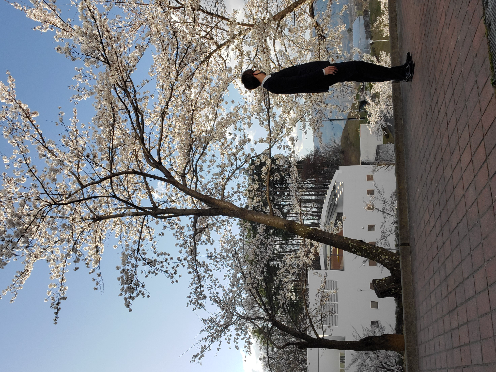
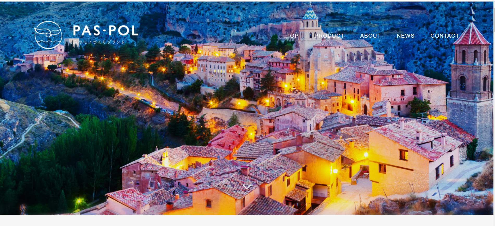
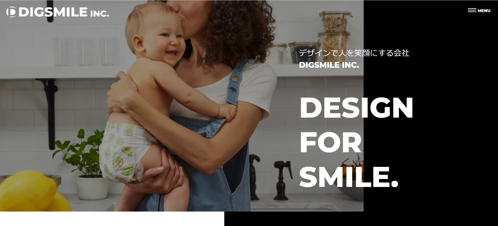

ABOUT

蓬田 千尋（よもぎだ ちひろ）
略歴：2002年3月8日生まれ
2020年公立諏訪東京理科大学
工学部 情報応用工学科 入学
現在 大学3回生
こんにちは。ちひろです。
授業でHTML5,CSS3,JavaScriptに触れ今まで何気なく閲覧していたWebページの仕組みについて興味を持ちました。
そこで、自分でWebページを作ってみたいと考えるようになり、Webページのフロントエンドの学習を本格的に始めました。
また、webデザインの技術として、色彩検定2級を取得しました。そして、現在は色彩検定1級を勉強中です。
現在扱えるものは、HTML,CSS,JavaScript,jQuery（JavaScript,jQueryは挿入程度）,sass（scss）です。WordPressは一通り学習しました。
WORKS
実務未経験です。
（模写コーディングを提示しています。）

POSPOL ホームページ
このコーディングで苦労した点は、コーディングページの設計です。初めての模写コーディングで設計からコーディングを行う際に設計が上手く書かれていないことに気が付き、コーディング途中に書き直すこともありました。

クリスタ 【コーディング課題】【上級編】
このコーディングで苦労した点は、ヘッダー部分にある画像、背景、見出しの文字が重なっている部分です。様々な方法で重なり方を試して、多くの時間を費やしました。